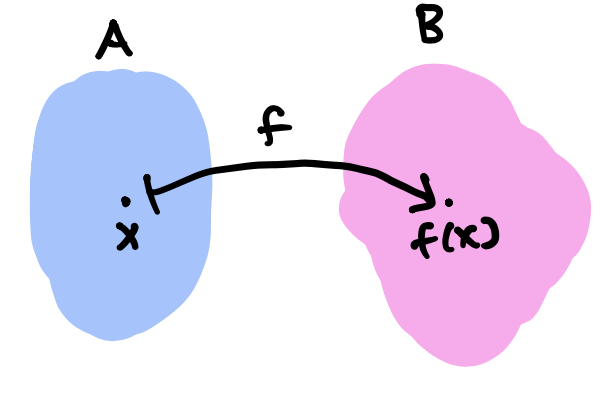

Lecture 1: Introduction to Analysis
Mathematical Writing
Improving our mathematical writing is a primary objective of this course.
Proof writing can seem really daunting. Sometimes it can feel like there is a “right” or “wrong” way to proceed, and that you need to demonstrate rigor in a particular way. This is not the case, and my hope for you is that this course helps you break free from this limiting belief.
While there are general principles that make a proof “good,” the wonderful thing about proof writing is that there is never only one right way to construct a proof. The proof is as unique as the person who writes it. Developing your own personal mathematical style is all part of the fun.
How do we write a good proof? First and foremost, good mathematical writing follows the principles of good writing.
- Consider your audience. The level of detail that you include, the notation and terminology that you use, and the formality or informality of your language should depend on who your intended reader is. A good rule of thumb for this course is that you write your proofs so that they would be clear and understandable to yourself two weeks prior (or a few weeks from now when you’re studying for an exam).
- Be clear and concise. In my experience, it is much more common for new proof-writers to make their proofs too long rather than too short. Try to make your arguments in a direct way and do not include extraneous information.
- Use active voice. It is tempting to hide behind passive voice to make our writing sound more “objective,” but the opposite is true: using active voice is an excellent way to make your writing direct and clear. Furthermore, active voice highlights that there is a person (or people) doing the mathematics. This is empowering for you as a mathematician and it helps us all remember that mathematics is a human enterprise.
- Revise, revise, revise! Writing a good proof is a process … nobody writes a good proof the first time! As with any writing, proofs should have multiple drafts. You can and should edit and solicit feedback.
My colleague Francis Su has written some excellent guidelines for good mathematical writing that dive further into these points. Please read this handout before proceeding on any of your written assignments.
This study by Inglis and Aberdein suggests that appraisal of whether a proof is “beautiful,” “intricate,” “rigorous,” or even “useful” is subjective. We will spend a lot of time in class constructing and critiquing proofs. It’s possible that you, your classmates, and I will sometimes disagree on points of style. This is totally normal and it’s all part of the process.
Review: Sets and Relations
The foundational mathematical objects we’ll be working with in this course are sets.
If we are writing out a description of a set, we denote the set with curly braces. For convenience we sometimes give sets shorthand names like \(S\). A set is very general and can contain any type of object … even other sets!
Example. \(S = \{4, \Delta, \Pi, \{2, \square\}\}\) is a set, and it contains the set \(\{2, \square\}\).
The set in this example contains 4 objects, which we call elements.
We can also write \(S = \{x : P(x) \text{ is true}\}\), where \(P\) is some statement about \(x\).
Example. S = {x : x<2}
Below is some helpful shorthand notation for sets that we’ll encounter a lot in this class.
| Notation | Description |
|---|---|
| \(x \in S\) | \(x\) is in \(S\) |
| \(x \notin S\) | \(x\) is not in \(S\) |
| \(\emptyset\) | The empty set (the set with no elements) |
| \(A \subset B\) | \(A\) is a subset of \(B\): if \(x \in A\), then \(x \in B.\) Be careful … \(A\) and \(B\) could be the same set! |
| \(A \subseteq B\) | Equivalent to \(A \subset B\), but clearly denoting the possibility of equality of the sets. |
| \(A \not\subset B\) | \(A\) is not a subset of \(B\) |
| \(A \cup B\) | Union: The set \(\{x:x \in A \text{ or } x \in B\}\) |
| \(A \cap B\) | Intersection: The set \(\{x:x \in A \text{ and } x \in B\}\) |
| \(A^C\) | Complement: The set \(\{x: x \notin A\}\) |
| \(A \setminus B\) | Set minus: The set \(\{x:x \in A \text{ and } x \notin B\}\) |
| \(A \times B\) | Cartesian product: The set \(\{(a,b): a \in A \text{ and } b \in B\}\). Here \((a,b)\) is an ordered pair, so order matters. |
In this course, we’ll often find ourselves in the situation where we would like to show that two sets \(A\) and \(B\) are the same set. Set inclusion gives us a technique to do this. If \(A \subset B\) and \(B \subset A\), then it must be true that every element in \(A\) is an element of \(B\) and vice versa, that is, \(A=B.\) Otherwise, \(A\neq B.\)
If \(A \subset B\) but \(B \not\subset A\), we say that \(A\) is a proper subset of \(B.\)
Examples:
- If \(P\) is the set of people, then \(A\) “is a student of” is a relation on \(P\times P.\) In the notation above: \[ \text{(you)} \,A\, \text{(Prof. Heather)}. \]
- If \(\mathbb{Z}\) is the set of integers, then \(<\) is a relation on \(\mathbb{Z}\times \mathbb{Z}.\) In the notation above: \[ 7 < 10. \]
One important and useful type of relation is an equivalence relation, which satisfies some special properties.
Equivalence relations are often denoted with \(\sim\) or \(\simeq\) (we usually reserve \(=\) for the identity).
Review: Functions
A function takes elements of one set (called the domain) and maps them to another set (called the codomain) so that we get a unique output for each input. We use the following notation for a function \(f\) with domain \(A\) and codomain \(B\) : \[ f: \ \begin{array}[t]{ >{\displaystyle}r >{{}}c<{{}} >{\displaystyle}l } A &\to& B \\ x &\mapsto& f(x). \end{array} \]
The top line gives the function’s name along with the domain and codomain. Here, we use the regular arrow \(\to\) (LaTeX \to). The bottom line indicates what happens to individual elements: an element \(x\) in \(A\) is mapped to an element \(f(x)\) in \(B\), with the ‘maps to’ arrow \(\mapsto\) (LaTeX \mapsto).

That is, the image a set of outputs \(f(C)\) for a particular input set \(C\). The inverse image is the set of inputs \(f^{-1}(D)\) that yield a particular output set \(D\). The image for the domain of a function is called the range.
Next, we give some important terminology to describe a function \(f:A\to B.\)
In other words, a function is surjective is the range and the codomain are the same: it’s a function whose mapping `hits’ every element in the codomain as an output.
Equivalently, \(f\) is injective if the inverse image of \(f(x)\) is a single point. In an injective function, each output came from a unique input.